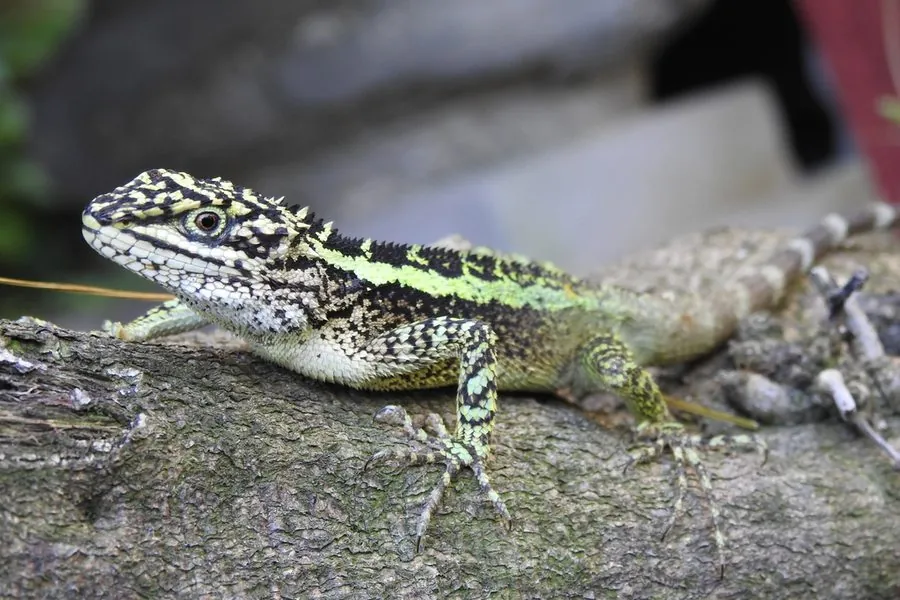

爬行动物 · 动物界
丽纹龙蜥 Diploderma splendidum

中国长江流域常见的树栖蜥蜴，雄性体侧有鲜艳的黄绿色纵纹，善于攀爬，捕食小型昆虫，对人无害。
- 分类
- 门脊索动物门纲爬行纲目有鳞目科飞蜥科属龙蜥属
- 栖息环境
- 中国南方的山地灌丛、林缘、农田与村舍附近
- 地理分布
- 中国长江流域及南方部分省区
- 保护级别
- IUCN 暂无评估；中国未列入国家重点保护名录
物种志
丽纹龙蜥体长 20–30 厘米，其中尾部约占三分之二，身体侧扁，头部呈三角形，吻端略尖，四肢细长，趾端有爪，善攀爬；体色以橄榄绿或灰绿色为底，雄蜥体侧有鲜艳的黄绿色纵纹和白色斑点，喉部有浅色斑纹，雌蜥体色较暗淡。
它分布于中国长江流域及南方部分地区的山地、灌丛、农田和村舍附近，树栖，白天在枝头晒太阳、捕食小型昆虫和蜘蛛，受惊时会迅速爬到树的高处或跳入草丛。它是卵生蜥蜴，雌蜥在土壤中产卵 4–8 枚，孵化期约 50–60 天。丽纹龙蜥无毒，对人没有危害，是南方山地常见的日行性蜥蜴；它们对环境变化较敏感，常被作为生态观察对象，目前未被列入国家重点保护名录。
形态与习性
- 食性小型昆虫和蜘蛛
- 体长20–30 cm（含尾）
- 寿命约 5–8 年
- 繁殖卵生，4–8 枚，孵化 50–60 天
- 活动节律昼行性，树栖
- 毒性无毒，对人无害
趣味知识
- 雄性丽纹龙蜥体侧有鲜艳的黄绿色纵纹，在阳光下十分醒目。
- 它善于攀爬，常在树枝和灌丛间追逐昆虫。
- 丽纹龙蜥无毒，是南方山地常见的日行性蜥蜴。